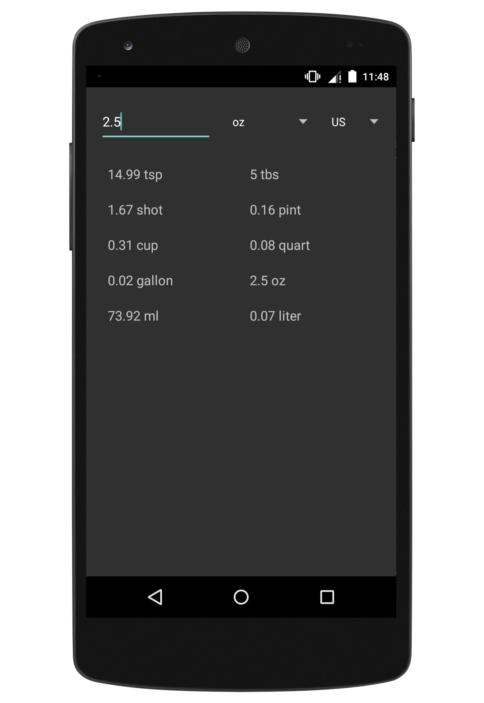
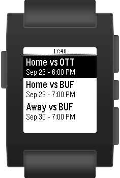
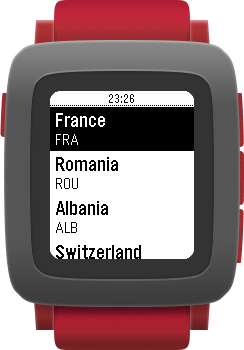
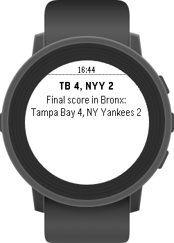

About Me
I am an Industrial Engineering Student at the University of Toronto. I am very hardworking with a passionate attitude towards everything I create. Every project I take on, big or small, is crafted with a strong attention to detail and I am always proud of the finished product. I am a quick and avid learner, interested in absorbing as much knowledge as possible.
I am very focused on technology, as it is an extremely powerful tool. It's ability to have such a substantial impact on society drives me to dive deeper into this field. Specifically, areas such as UI and UX are of great interest to myself as they deal with how people use technology, and consequently the extent to which it has an effect in their lives.
Outside of academics and tech, I am also very interested in music. Having grown up in an environment with an abundance of musical instruments, and pursuing my high school education at an arts school, music has become an essential part of my life. I believe that my history with music has lead me to become a very creative person, and consequently has given me a unique outlook on problem solving. This has proven to be useful in tackling many problems faced throughout my academic career, as well as in engineering.
Resume
View my resume
Projects
|

|
Converter HelperCreated for personal convenience as a simple offline app to convert between common liquid units |
|

|
Toronto Maple LeafsPebble app created to track the team's schedule and score as well as the players' stats |
|

|
Euro 2016App developed to track group standings and matchday results for the 2016 European Football Championship |
|

|
MLB ScoreboardCreated to provide play by play updates for all MLB games in progress |